大阪のハウスクリーニング
エアコンクリーニングなら キレイシア
大阪のハウスクリーニング｜エアコン・水回り対応 株式会社キレイシア
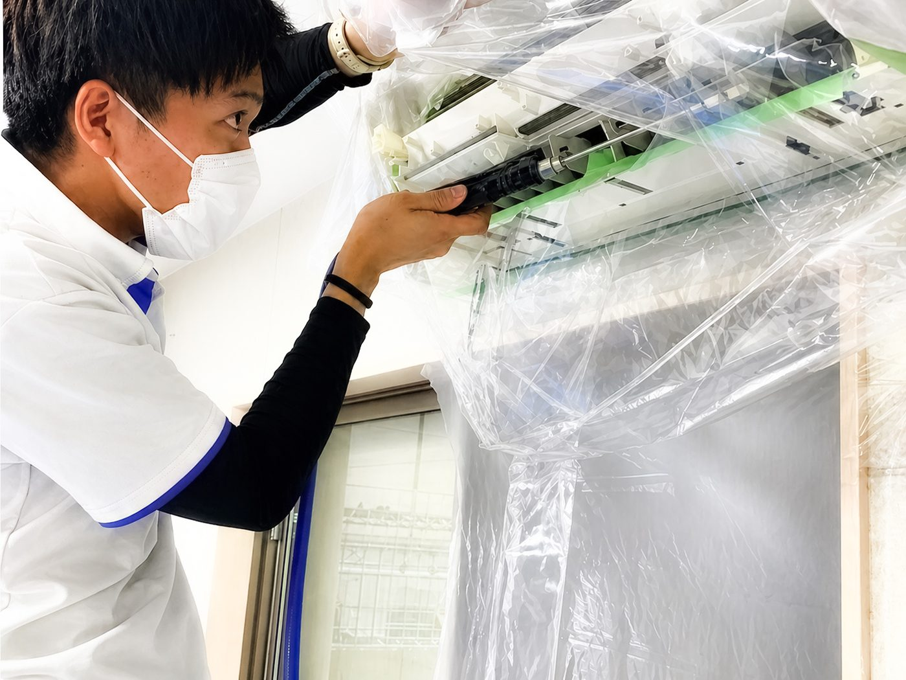
実績豊富なプロが伺います、
安心してお任せください
5,000
台以上
エアコンクリーニング実績
1,000
台以上
洗濯機クリーニング実績
4.77
/472件
口コミ評価（472件）
2位
洗濯槽・洗濯機クリーニング 大阪府ランキング
（2023年3月）
大阪府を中心に、
信頼をいただきながらハウスクリーニングの
ご依頼を頂いております。
リーズナブルな価格で
お客様一人ひとりのご要望に合わせたサービスを提供し、
安心していただけるクリーニングに取り組んでいます。
「株式会社キレイシア」は
「キレイ」と「シアワセ」を
提供する会社
当社は、大阪・京都・兵庫・奈良を中心にハウスクリーニングを行っています。
エアコンクリーニングや洗濯機クリーニングをはじめ、ご自宅の清掃から、
店舗・ホテル・施設のクリーニングまで幅広く対応。
プロの技術で、隅々まで丁寧に清掃し、快適な空間をお届けします。
「掃除が気になるなる」「エアコンの汚れを何とかしたい」
そんなお悩みは、ぜひ当社にお任せください！
お客様のご要望に合わせた最適なプランをご提案し、安心・安全なクリーニングサービスをご提供いたします。

キレイシアのスタッフ一同、笑顔と誠実な対応でお客様をお迎えします。
なぜキレイシアの品質は安定しているのか？
キレイシアの品質が安定している理由は、自社内の体系的な研修制度にあります。 新人スタッフから現場リーダーまでが同じカリキュラムで技術と接客を学ぶことで、どのスタッフが伺っても同じ仕上がりをお届けできる体制を整えています。
BASIC
基礎研修
道具の使い方・洗剤の知識・接客マナーを座学とロープレで徹底習得
OJT
現場同行
先輩スタッフの現場に同行し、実際の作業・お客様対応を体得
EXPERT
技術習得
完全分解クリーニング等の高度技術をマスターし、独立対応へ
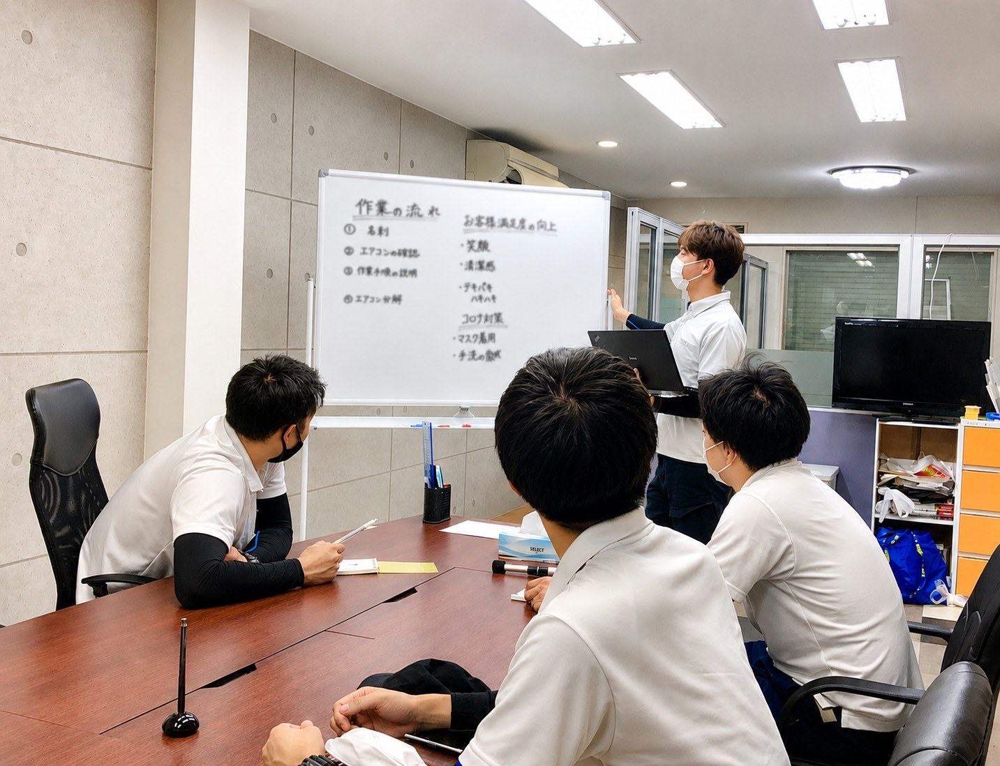
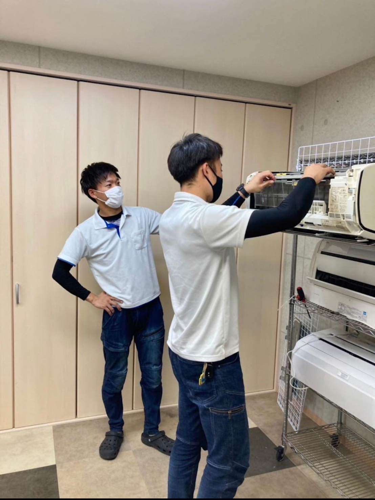
自社研修でサービスの安定性向上、統一された品質で、
いつでも最高のサービスをお届けいたします。
なぜキレイシアが選ばれるのか？
プロの誇りを込めて、3つの理由
キレイシアが選ばれる理由は「確かな技術」「わかりやすい料金」「心を込めた対応」の3つです。 経験に裏打ちされた品質と、追加料金なしの正直な料金体系で、大阪・京都・兵庫・奈良エリアのお客様から口コミ評価4.77（472件）をいただいています。
確かな技術で、
安心と満足を
経験に裏打ちされた技術と知識をもとに、すべてのお客様に最適なクリーニングをお届けします。品質への妥協は一切いたしません。
わかりやすい説明と、
正直な料金
作業前に内容と料金を丁寧にご説明し、ご納得いただいてから作業を開始します。後から追加費用が発生することは一切ありません。
心を込めた対応で、
信頼を築きます
お客様とのコミュニケーションを大切にし、ご要望やお困りごとに寄り添ったご提案をいたします。信頼されるパートナーを目指します。
AIRCON CLEANING
エアコンクリーニングはなぜ完全分解が必要？
完全分解クリーニングは、熱交換器・送風ファン・ドレンパン・基板まで取り外して洗浄する高度な技術です。 通常の分解では届かない奥のカビや汚れまでほぼすべて取り除けるため、においの再発が少なく、効きも良くなります。キレイシアはこの完全分解に対応するスペシャリストが徹底対応します。
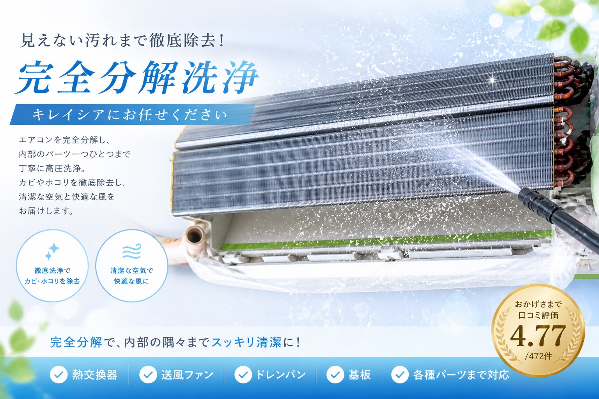
・エアコンクリーニング
・お掃除機能付き
全機種対応
対応メーカー
完全分解対応可能
完全分解クリーニングができるのは、限られたプロだけ。
エアコンの内部を徹底洗浄する完全分解は、高度な技術と経験が求められる専門作業です。
しかし、この作業をマスターしているのはごくわずか。
一般的な「分解洗浄」では届かない奥の汚れも、完全分解ならほぼすべて取り除けます。
★ キレイシアの強み 完全分解洗浄とは？
エアコンクリーニングの
クオリティについて
エアコンクリーニングのクオリティにも種類がございます💡
① 通常分解
フィルターやカバー、吹き出し口周辺を取り外して洗浄。手軽にエアコンクリーニングが可能。
通常分解洗浄でも6～8割の洗浄クオリティを実現。
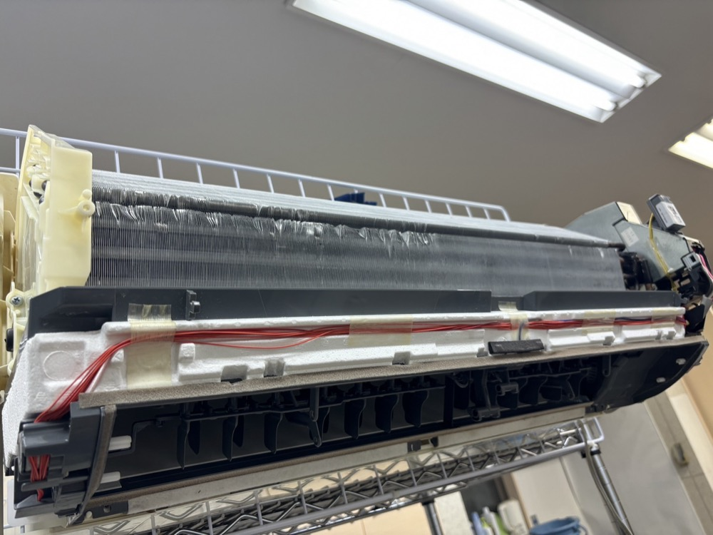
② ドレンパン分解
エアコン内部のドレンパン（結露水を受ける部品）を取り外して洗浄。
汚れやカビが生えやすい、水が溜まる受け皿のパーツを徹底除去できる。水漏れや悪臭を防げる。
※一部分解できない機種がございます
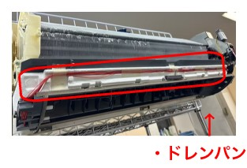
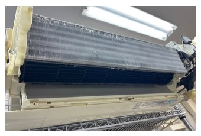
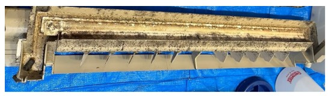
③ 完全分解
熱交換器やファンまで取り外し、内部の隅々まで洗浄。汚れやカビをほぼ完全に洗浄可能。
完全分解をできる業者は全体の10～20%程度と言われており対応出来ない業者も多いですが、キレイシアは対応可能です。
※一部分解できない機種がございます
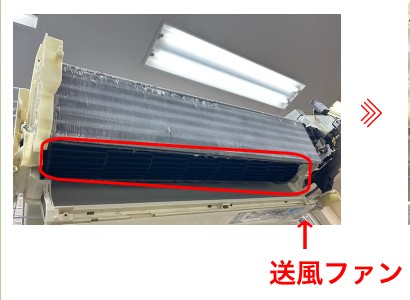
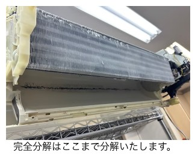
完全分解
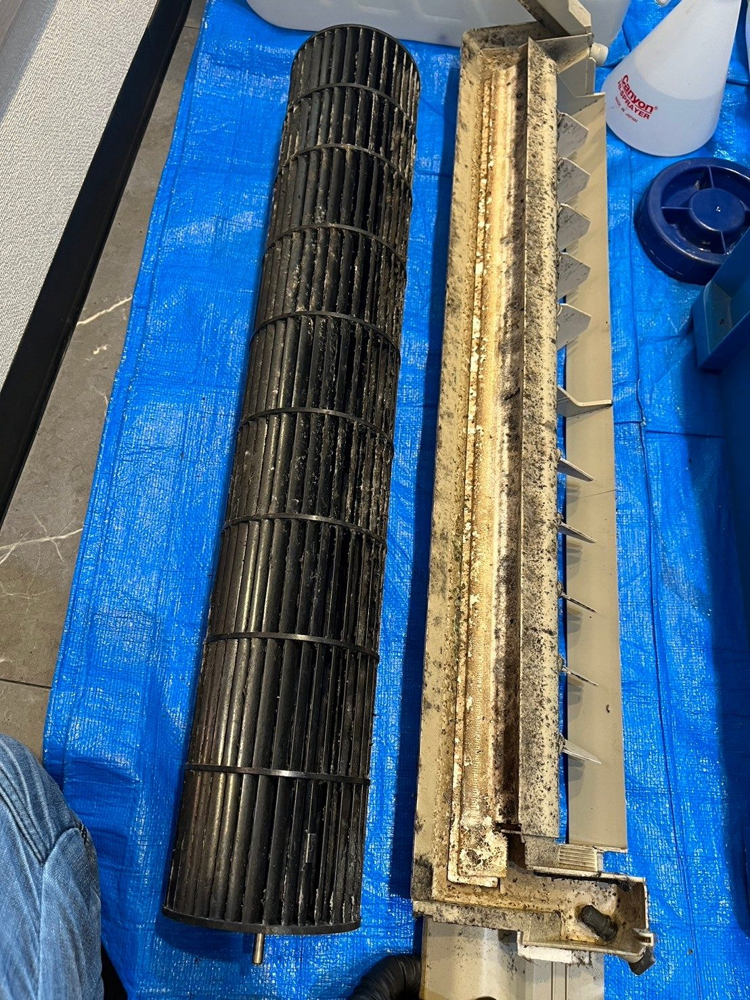
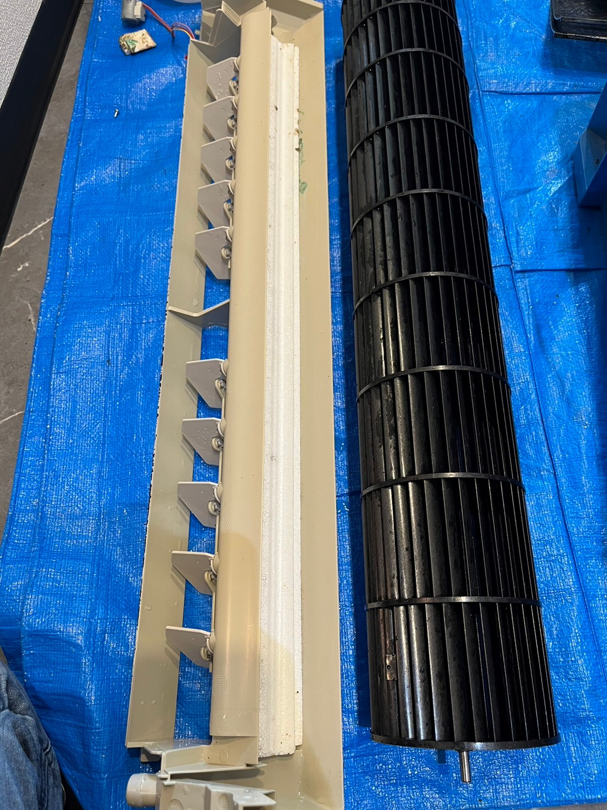
※完全分解クリーニングによる施工事例
大切な、お子様、
わんちゃん、猫ちゃんが
いるお客様。
自然と家族に優しいエコ洗剤取り扱いございます！！
（お子様・ペットがいるご家庭は¥500引き。両方該当でも割引は¥500です）
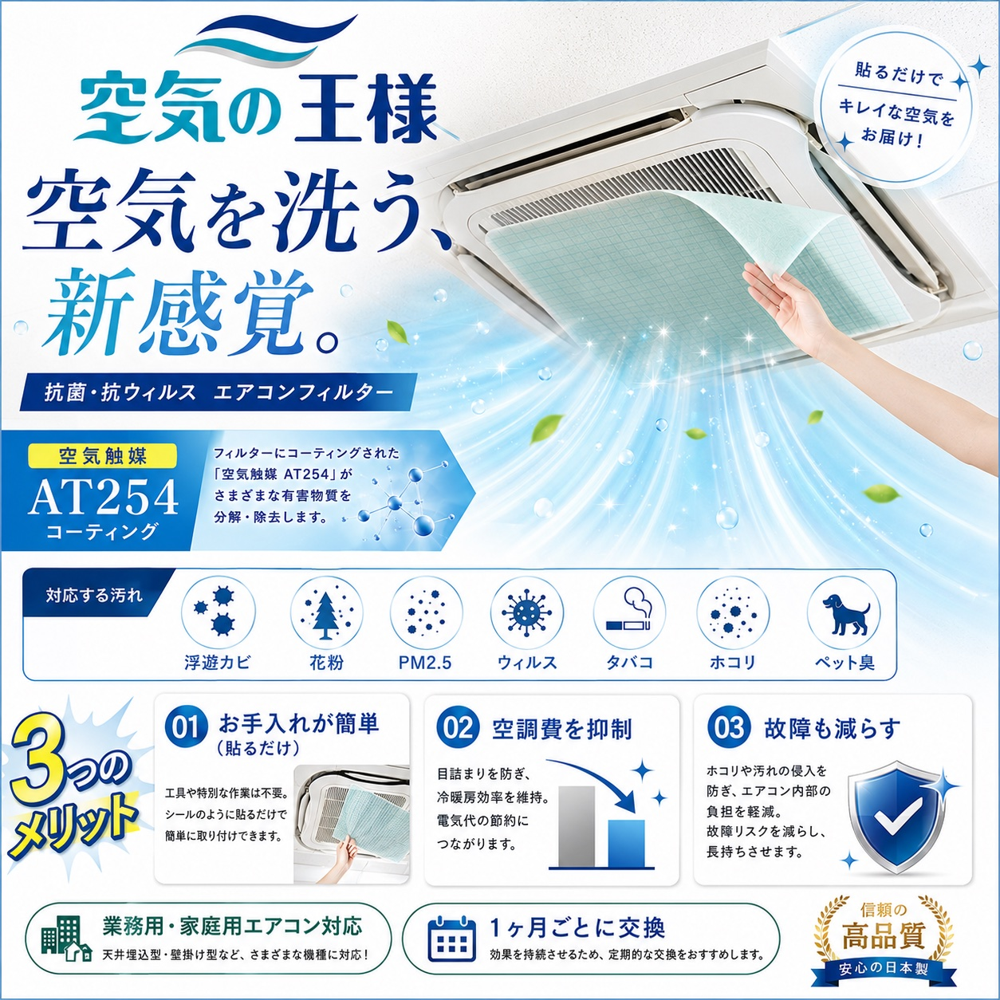
空気を洗う、新感覚。
空気の王様 抗菌エアコンフィルター
貼るだけ簡単。空気触媒AT254コーティングで、浮遊カビ・花粉・PM2.5・ウィルス・ニオイ対策。 お手入れがラクになり、空調費の抑制やエアコンの故障対策にも。飲食店でも長年愛用されています。
空気の王様の詳細を見る— WATER AREA CLEANING —
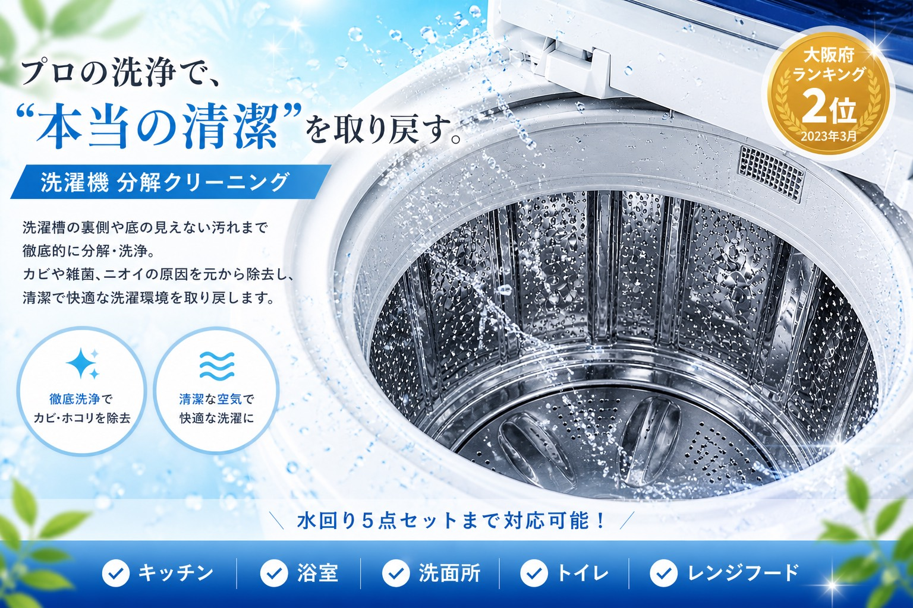
水回り（キッチン・浴室・洗面所・トイレ・レンジフード）は、汚れの種類が異なるためプロの技術が最も効果を発揮する箇所です。 キレイシアでは洗濯機の分解クリーニングから水回り5点セットまで、対応箇所を自由に組み合わせていただけます。
洗濯機クリーニングは何をしてもらえる？
洗剤や柔軟剤を変えてもニオイや黒ずみが気になる…。
それ、洗濯機の内部汚れが原因かもしれません。
洗濯機の中は、湿気・皮脂・洗剤カスが溜まりやすく、カビや雑菌の温床になりがち。
見えないからこそ放置しがちですが、肌に触れる衣類やタオルの
"本当の清潔"を守るには、定期的な内部洗浄が大切です。
当店では分解クリーニングにより、洗濯槽の裏側やパーツの奥まで徹底洗浄。
市販の洗濯槽クリーナーでは落とせない頑固な汚れやカビを、スッキリ除去します。
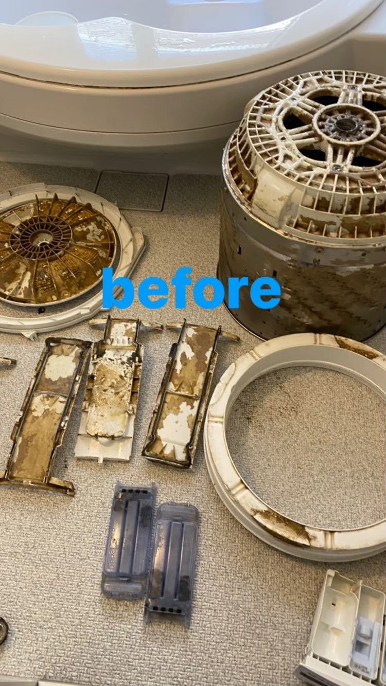
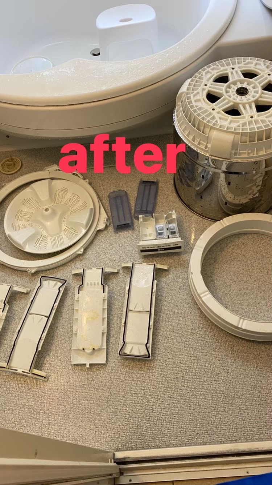
ご家族の肌に触れるものだから、洗濯機の中まで清潔に。
プロの洗濯機クリーニングをぜひご体感ください！
気になる水回り
5点まるごと徹底クリーニング
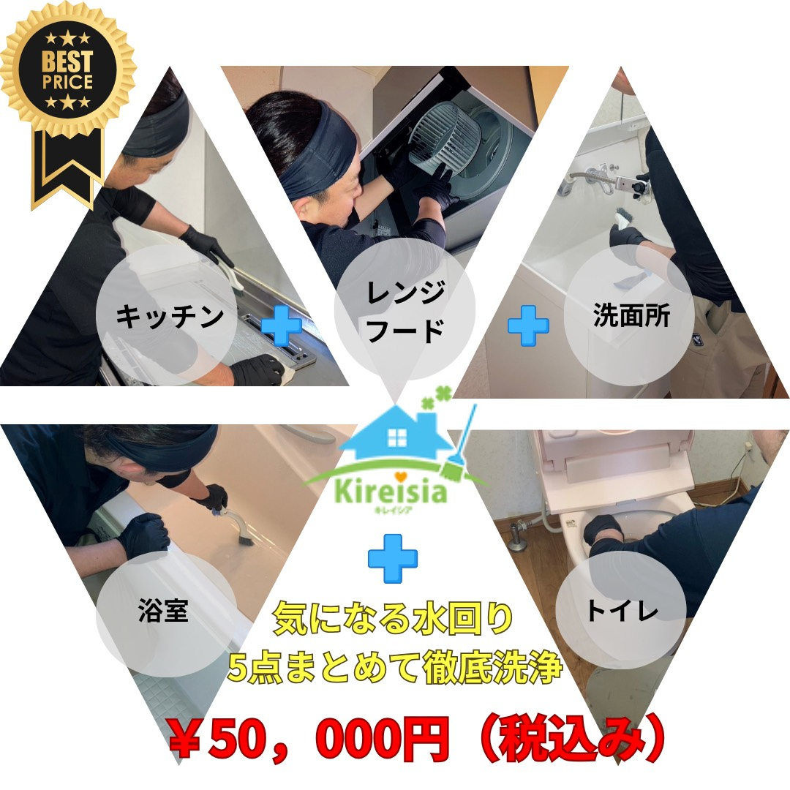
※単品でも対応可能です。組み合わせ自由です。
お客様の声
キレイシアは口コミ評価4.77（472件）をいただいています。 下記は実際にご利用いただいたお客様からの評価の一部です。
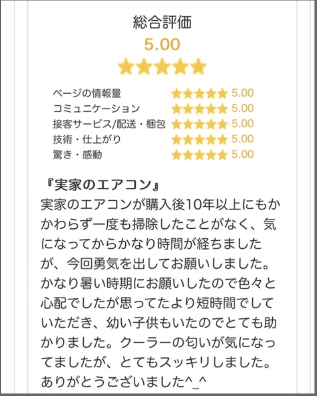
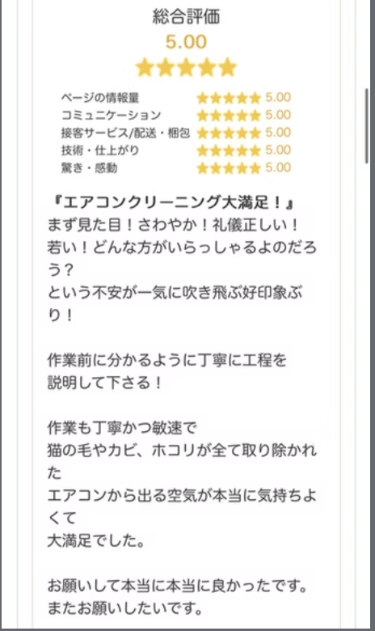
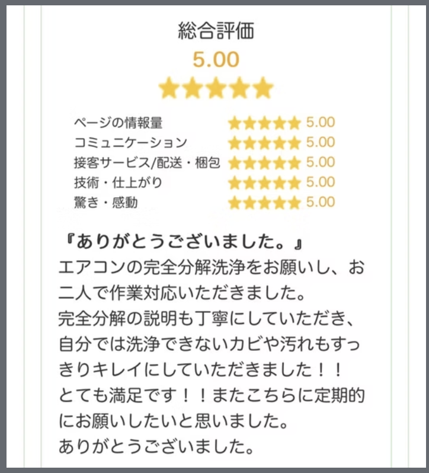
← 横にスワイプしてご覧いただけます →
対応エリアはどこまでですか？
対応エリア拡大中！キレイシアは大阪市城東区を拠点に、大阪府・京都府・兵庫県・奈良県の広域に対応しています。 下記エリア外のお客様もまずはお気軽にご相談ください。出張エリアの調整が可能な場合があります。
大阪府
大阪市全域（城東区・中央区・北区・福島区・天王寺区・浪速区・西区 ほか24区）／堺市／東大阪市／八尾市／吹田市／豊中市／枚方市／高槻市／茨木市／松原市 ほか
京都府
京都市（伏見区・山科区 ほか）／宇治市／長岡京市／向日市／城陽市／八幡市／木津川市 ほか
兵庫県
神戸市（東灘区・灘区・中央区 ほか）／尼崎市／西宮市／芦屋市／伊丹市／宝塚市／川西市 ほか
奈良県
奈良市／生駒市／大和郡山市／天理市／橿原市／香芝市／葛城市／大和高田市 ほか